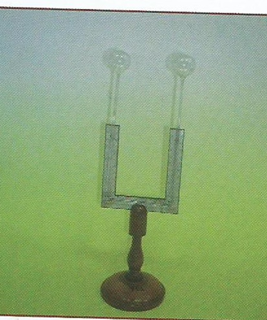

Termometro differenziale
Scuola di provenienza: Liceo classico "P. Colletta", Avellino
Settore: Termologia
Costruttori: Sconosciuto
Materiali: Legno e vetro
Accessori: Nessuno
Stato di conservazione: Buono
Descrizione: Una piccola colonna di acido solforico colorato è introdotta in un tubo piegato due volte ad angolo retto, in modo da formare due rami paralleli con alle estremità due bolle. Il liquido riempie la parte orizzontale del tubo e parte dei rami verticali: quando l’aria contenuta nelle due bolle è alla stessa temperatura, qualunque essa sia, il liquida si eleva alla stessa altezza nei rami verticali e raggiunge due punti segnati zero. Se una delle due bolle è mantenuta ad una certa temperatura, mentre si eleva l’altra, ad esempio, di 5°, la piccola colonna liquida si eleverà dal lato della bolla fredda fino in a, mentre discenderà dall’altra parte in b. Se supponiamo diviso in dieci parti uguali lo spazio percorso dal liquido, il valore di ciascuna divisione sarà ¼ di grado. Questo termometro fu poi sostituito da quello elettrico d Melloni.